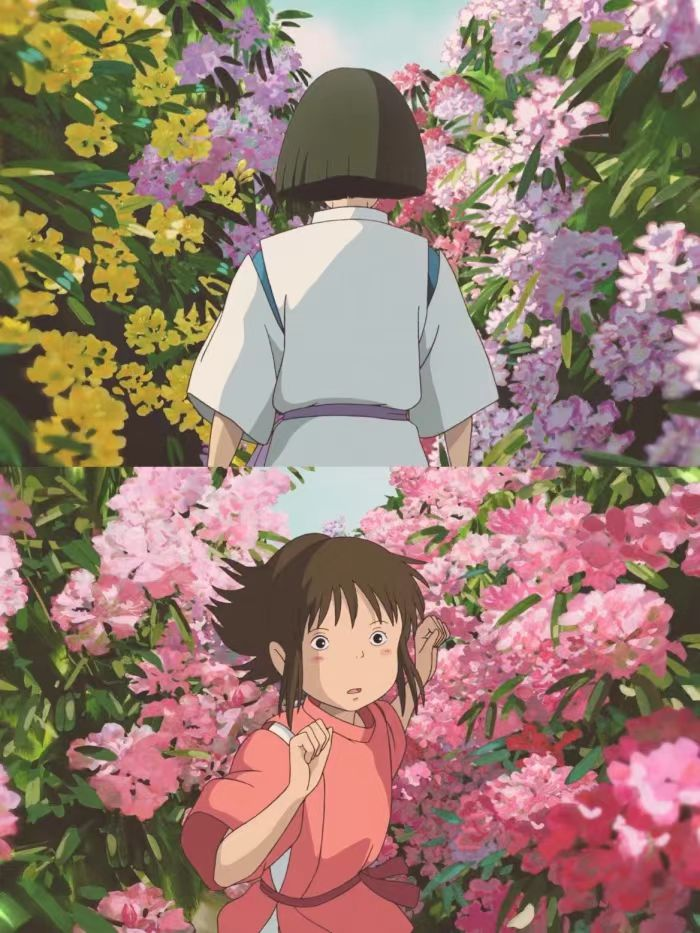

宫崎骏
我们别无选择，只能从这个流感盛行的世界出发。


《千与千寻》（Spirited Away）是宫崎骏执导的一部动画电影，于2001年上映。这部电影被广泛认为是宫崎骏最杰出的作品之一，也是日本动画电影的经典之作。
《千与千寻》的故事发生在一个神秘的世界里。女主角千寻是一位10岁的小女孩，她和父母来到乡间旅行时，偶然进入了一座神秘的隧道。当他们穿过隧道时，他们发现自己来到了一个充满奇幻和魔法的世界。
千寻的父母被变成了猪，而她自己则被困在了一个神秘的温泉旅馆里。这个旅馆实际上是一个属于神灵和妖怪的世界，由一个神秘的女巫婆掌控。千寻必须在这个奇异的世界中寻找到自己的父母，并努力适应这个全新的环境。
在她的冒险过程中，千寻遇到了各种各样的奇幻生物和神灵，包括一个名叫汤婆婆的神秘老婆婆、一个帅气的龙神、一个可爱的小白脸等等。通过与这些角色的相处和互动，千寻逐渐成长并理解了勇气、友情和责任的重要性。
《千与千寻》以其细腻的画面和深刻的主题而闻名。宫崎骏将奇幻和现实元素相结合，创造出一个充满想象力和神秘感的世界。电影中的场景设计精美细致，每一个细节都展现了宫崎骏和吉卜力工作室的精湛技艺。
除了令人叹为观止的视觉效果，电影还探讨了许多深刻的主题，如成长、勇气、自我发现和人性的复杂性。宫崎骏通过千寻的旅程，传达了对人类与自然、过去与现在之间联系的思考。电影通过细腻的情感描写和令人难忘的角色，引导观众思考生活中的重要价值观和道德选择。
《千与千寻》在国际上取得了巨大的成功和认可。它成为了首部赢得奥斯卡最佳动画长片奖的日本动画电影，并在全球范围内获得了广大观众的喜爱和赞誉。电影的成功也进一步提高了日本动画电影在全球的知名度和影响力。
关于千寻与小千
关于千寻和小千那一段：在电影《千与千寻》中，"忘了名字就回不去了"这一台词是在描述白龙汤屋，它被比作充满了诱惑、欲望、嫉妒和排挤的现实社会。这里的千寻实际上是一个刚刚从象牙塔中走出的女孩，她的名字在这里象征着人最初的价值观。
当千寻初次来到白龙汤屋时，她的名字被改成了"小千"，这象征着初入职场的人原有的价值观和底线会受到环境的影响而发生改变。记住自己的名字意味着把握住自己最初的原则。
忘记了名字就意味着忘记了自己的原则，被环境改变着。无法回去则表示失去了自我，找不到最初的理想，偏离了原本的航线。
这一情节在电影中强调了一个重要的主题，即人在面对现实的挑战和压力时，需要坚守自己的价值观和原则，并且不被外界的诱惑和变化所左右。千寻通过重新找回自己的名字，重新确立了自己的身
份和原则，最终克服了困难，回到了属于自己的世界。
这个情节也可以被视为宫崎骏对现实社会的一种隐喻，提醒着观众在面对现实的种种诱惑和压力时，要保持对自己内心的坚守，并不断寻找和坚持自己的真实价值观。